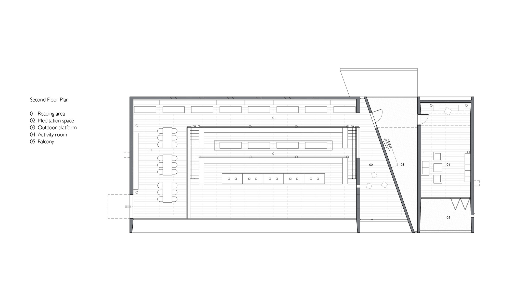
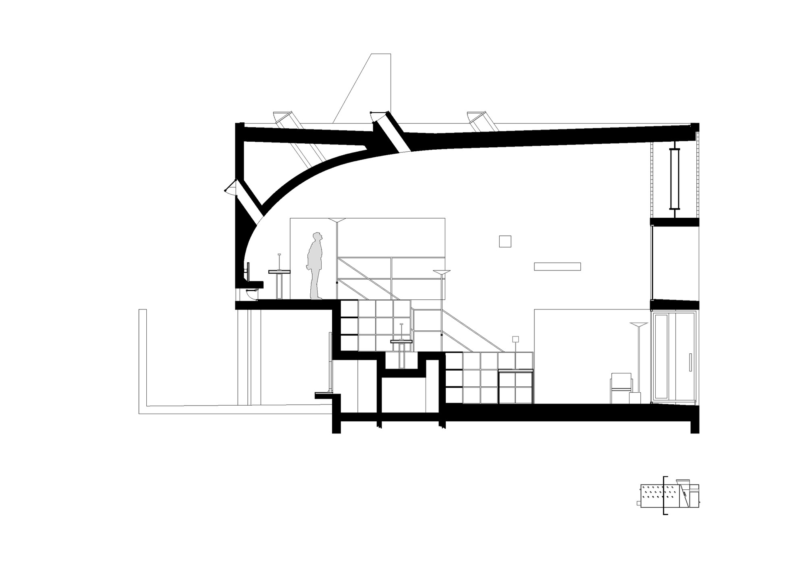
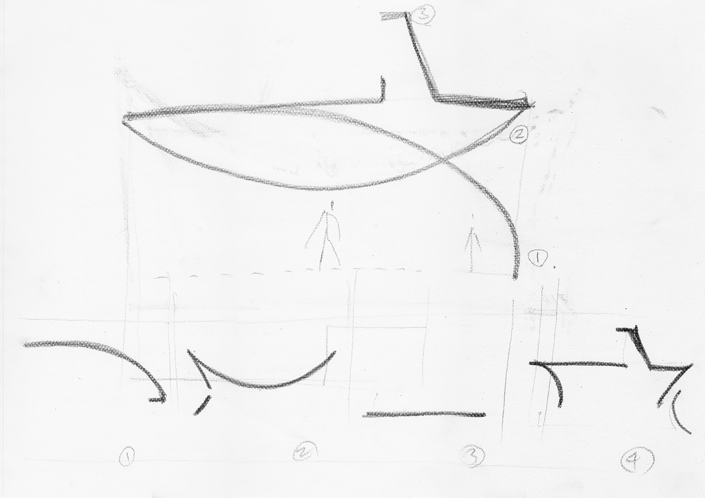

01
基本信息
| 项目名称 | 孤独图书馆 / 海边图书馆 / Seashore Library |
|---|---|
| 建筑师 | Vector Architects / 直向建筑 / Gong Dong / 董功 |
| 地点 | 中国河北秦皇岛，南戴河 / 北戴河新区阿那亚海岸社区一带 |
| 年份 | 2015 |
| 类型 | Cultural |
| 功能 | 文化建筑；图书馆；社区公共文化设施 |
| 状态 | 建成 |
| 面积 | 450 m2 |
| 资料可信度 | high |
关键事实
02
项目概述与设计概念
这个案例最值得学习的不是海边建筑如何取景，而是如何把剖面、身体移动、光、风和材料共同组织成一种可被公众持续使用的精神性空间。
资料中的概念
直向建筑官方说明将设计重点概括为空间边界、身体移动、光氛围、空气流通与海景之间的共存关系；设计从剖面开始，依据不同空间功能建立各自与海、光、风的关系。
综合判断
从资料和图纸综合判断，项目把海景拆分为一组不同的身体经验：阅读大厅直接观看海，冥想空间听海但弱化视觉，活动室和屋顶平台通过光线、平台和高差形成转场。
03
核心设计策略
以剖面生成空间关系
- 面对的问题
- 海边场地过于开阔，单纯正面对景容易把空间简化为观景盒子。
- 具体做法
- 从剖面组织阅读、冥想、活动、水吧和休息空间，用屋面弧线、看台平台和高差定义人与海的不同关系。
- 建筑效果
- 不同空间获得不同的海景、光线、通风和尺度，形成连续但差异明确的体验序列。
- 证据
- 直接来源与图纸证据混合。
- 可迁移方法
- 先定义人与景观发生关系的剖面方式，再组织平面功能。
阅读大厅作为面海看台
- 面对的问题
- 阅读空间既要安静，也要回应海景带来的公共性。
- 具体做法
- 设置逐级升起的平台、可开启玻璃旋转门和横向海景窗，让不同位置的人都能看到海。
- 建筑效果
- 阅读空间同时成为图书馆、剧场和观景平台，海成为被共同观看的自然舞台。
- 证据
- 直接来源与图纸证据混合。
- 可迁移方法
- 公共阅读空间可以通过台阶、视线和开口组织共同观看，而不只靠书架定义。
用光和风细分空间性格
- 面对的问题
- 小型公共建筑需要容纳明亮开放和安静内向两类体验。
- 具体做法
- 阅读空间使用横向窗、可开启玻璃墙、玻璃砖和屋面通风井；冥想空间使用水平与垂直窄缝；活动室使用天窗和高侧窗。
- 建筑效果
- 光与风从环境性能转化为空间气质，阅读厅开放均质，冥想空间内向幽暗。
- 证据
- 直接来源。
- 可迁移方法
- 通过开口尺度、方向和可开启构件塑造空间性格。
材料把场地时间转译为建构表情
- 面对的问题
- 海边建筑需要厚重耐久，但不能失去人的触感和记忆。
- 具体做法
- 使用木纹清水混凝土回应沙地上的风痕、脚印和车辙；用手工玻璃砖弱化钢桁架和墙体的硬度。
- 建筑效果
- 外部像风化石块，内部通过玻璃砖和木纹混凝土获得更温暖、可感知的光和质地。
- 证据
- 直接来源。
- 可迁移方法
- 材料表达应从场地经验和施工过程里生长，而不是作为装饰符号贴附。
从图书馆演变为社区 Freespace
- 面对的问题
- 度假社区文化设施容易被消费化或限定为单一功能。
- 具体做法
- 在季节性开放基础上，空间被公众持续重新使用，除读书外容纳音乐、剧场、舞蹈、会议和拍摄等活动。
- 建筑效果
- 建筑成为连接社区居民、游客和公共文化活动的开放场所。
- 证据
- 访谈来源。
- 可迁移方法
- 公共建筑的弹性价值来自可被重新定义的空间质量，而不只是功能表。
04
场地关系
图书馆位于渤海湾海岸线上的度假社区，作为社区文化与休闲设施之一，东侧直接面向大海。
项目在春、夏、秋三季服务社区居民并向社会公众开放，具备社区公共文化节点属性。
05
空间与流线
首层以阅读大厅为核心，辅以冥想、水吧、休息和活动空间；阅读平台向后升起，形成观看海面的剖面秩序。
活动室与阅读空间通过户外平台区隔，以减少声音干扰并形成流线中的室外转场。
06
结构、材料与建造
屋顶荷载通过海景窗上方钢桁架承担，以避免结构杆件打断主要观海视窗。
木纹混凝土来自沙地风痕、脚印和车辙的场地记忆；施工前进行样墙实验以控制纹理与颜色。
07
图片资料







08
参考来源与信息缺口
- 2015 孤独图书馆 / Project-Social & Cultural 2015 Seashore Librarylevel_aVector Architects / 直向建筑
官方项目页，用于确认项目身份、设计理念、功能构成、开放方式、剖面和材料逻辑。英文页：https://www.vectorarchitects.com/en/projects/31
- 海边图书馆 / 直向建筑 Vector Architectslevel_bArchDaily 中国
专业建筑媒体项目页，包含面积、年份、团队、摄影、中文项目叙述、图纸和图库。
- Seashore Library / Vector Architectslevel_bArchDaily
专业建筑媒体英文项目页；与中文页内容高度对应，不作为完全独立的第二媒体来源计数。
- Seashore Library, Bei Daihe, China by Vector Architectslevel_bgooood
gooood 深度报道 / 访谈入口，标题显示为三联海边图书馆十二问直向建筑主持建筑师董功；用于补充中文专业媒体语境。
- Vector Architects, Xia Zhi, Su Shengliang · Seashore Librarylevel_bDivisare
专业建筑图库与文本资料，提供英文项目叙述、空间与材料说明。
- Seashore Library, Beidaihelevel_bArquitectura Viva
专业建筑媒体项目页，记录类型、材料、时间、城市，并提供剖面、空间序列和渗透性分析。
- 董功：直向建筑在威双 | 有方专访level_b有方 / Archiposition
专业建筑媒体访谈，提到直向在威尼斯建筑双年展选择海边图书馆作为主展项目，并讨论其与 Freespace、社区公共空间和后续多功能使用的关系。
- 【东大建筑考研.建筑案例分析01】三联海边图书馆——并置罗列的空间结构level_c知乎专栏
搜索结果摘要显示为建筑考研案例分析，正文访问受限；仅作为学习型补充线索，不用于确认核心事实。
信息缺口与冲突
- Project naming：官方中文页使用“孤独图书馆”，ArchDaily 中文标题使用“海边图书馆”，中文媒体和学习资料常称“三联海边图书馆”；本包并列记录这些名称。
- Image rights：图片已下载用于研究包本地阅读，但公开发布、商业使用或出版前需要另行确认摄影师、媒体平台或权利方授权。
- Supplementary Chinese discussion：知乎补充源正文访问受限，不能作为项目事实依据；普通网页搜索未保留可稳定访问的微信正文来源。